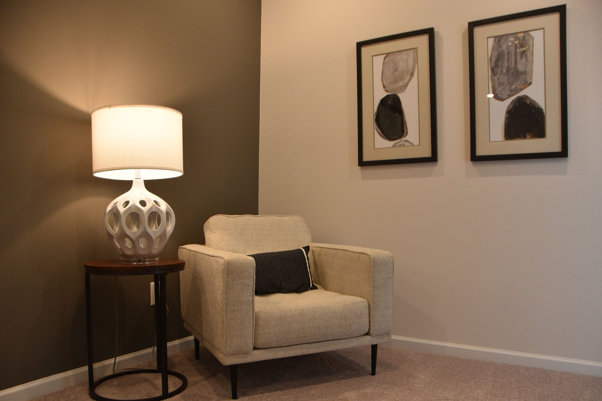
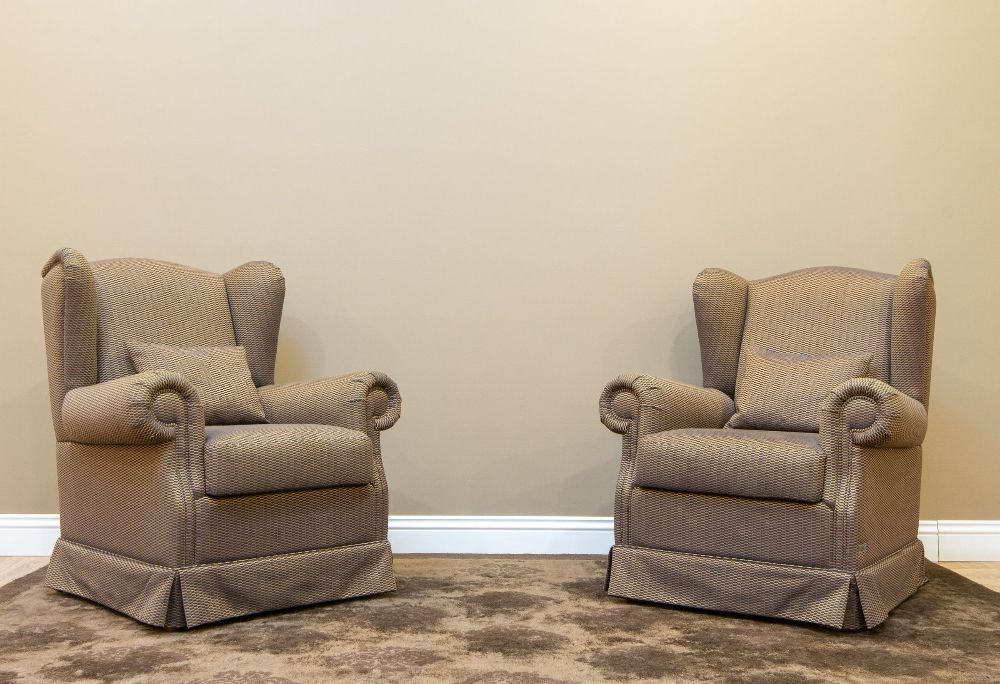
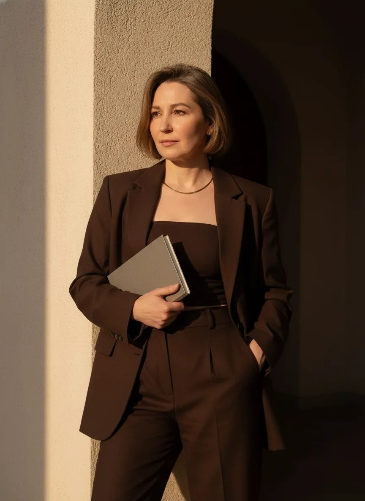

Основа missiontherapie.nl, кнопки закруглённые, блоки с прямыми углами. Фото цветные. Назови: главный экран А или Б, палитру 1, 2 или 3, шрифт из пяти. Тексты черновые, взяты из её 2ГИС, Telegram и отзывов.

Клинический психолог. Консультации очно в Свободном и онлайн
Записаться на консультацию
Клинический психолог. Консультации очно в Свободном и онлайн
Записаться на консультациюбелый, светлый беж #E8C59B (стена на свету), тёмный беж #A98563 (стена в тени), коричневый #2B190F (пиджак)
белый, светлый беж #F3E4D0, тёмный беж #A98563, коричневый #3A2417. Большие бежевые плоскости спокойнее
белый, светло-серый #EEEAE5, серо-бежевый #8C8278, почти чёрный #1C1A18. Фото цветные
Клинический психолог. Консультации очно в Свободном и онлайн
Записаться на консультациюКлинический психолог. Консультации очно в Свободном и онлайн
Записаться на консультациюКлинический психолог. Консультации очно в Свободном и онлайн
Записаться на консультацию
Я клинический психолог. Работаю со взрослыми, с детьми и с семьями, очно в Свободном и онлайн.
Здесь будет её небольшое эссе о себе и образование: она просила оба пункта, текст пришлёт сама.
Записаться на консультациюЯ клинический психолог. Работаю со взрослыми, с детьми и с семьями, очно в Свободном и онлайн.
Здесь будет её небольшое эссе о себе и образование: она просила оба пункта, текст пришлёт сама.
Записаться на консультацию